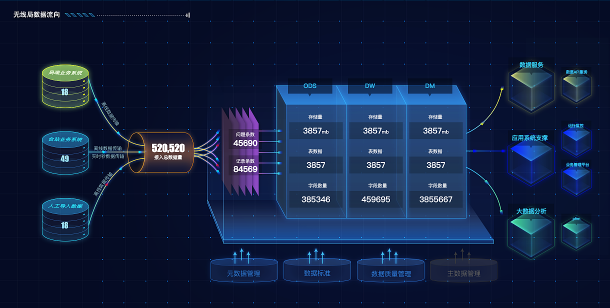
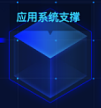
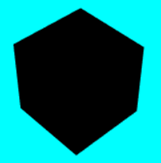
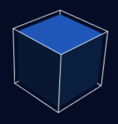
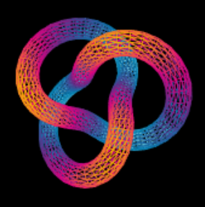
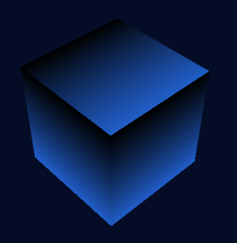
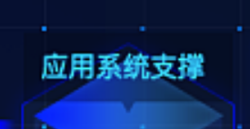
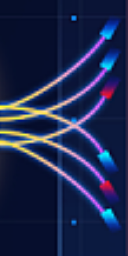
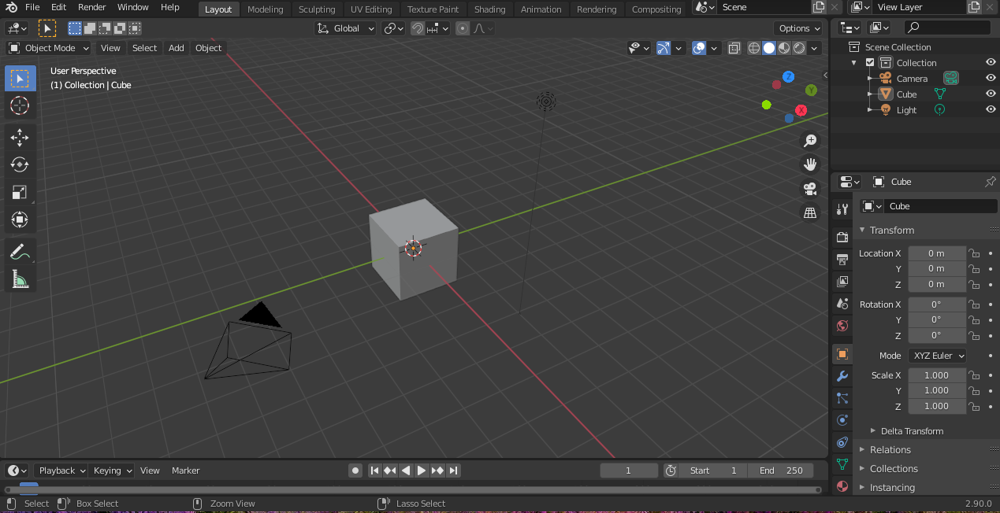

网页技术（HTML5、CSS3、JavaScript）能实现效果炫酷的 3D 建模甚至是 3D 动画效果吗？我暂时认为是不可以的。比如期望这样的页面效果：
d3.js 是不用考虑的，它仅仅是一个数据可视化的工具，和 3D 建模是两个领域。
three.js 似乎是目前比较流行的 3D 建模库。假如 three.js 可以做到的话，应该怎么做呢？首先的想法是画这样一个正方体出来：
3d 建模里的立方体相当于编程世界的 hello world，很容易就能出来：
给场景加上灯光，正方体就不是黑漆漆的了。然后给正方体加上颜色，改一下场景的背景色，再把灯光调到正方体的上面，正方体就能像样子一点了：
目标正方体的边缘是发光的，而且是渐变色。怎么给正方体加一个边缘线呢，正方体本身是没有这种属性的，只能用线性材料（three.js 里的 LineBasicMaterial，正方体用的是 MeshPhongMaterial）再画一个正方体出来，套在实体正方体上：
怎么让线性的正方体发光呢？线性材料（LineBasicMaterial）是不能使用渐变色的，只有着色器材料（ShaderMaterial）可以使用渐变色。着色器材料可以实现多彩的效果，比如这样（来自 StackOverflow），：
但是到这里遇到问题了。在 three.js 里，渲染一个物体需要两个参数，一个是 geometry（几何体），一个是 material（材料），线性材料和着色器材料都是材料的种类。(TorusKnotGeometry 是上图用到的几何形状)
线条正方体 = EdgesGeometry + LineBasicMaterial
渐变曲线条 = TorusKnotGeometry + ShaderMaterial
现在想要线性材料和着色器材料（LineBasicMaterial 和 ShaderMaterial）组合是不合逻辑的，我没有找到实现发光的正方体边缘效果的方法。把着色器用在正方体的效果是这样的（颜色从 0x215ec9 到 0x000000）：
所以然后呢？我意识到即使实现了一个好看的正方体，离渲染出整张图还差的太多。比如这样的文字效果怎么做？
three.js 的 Texture 本身效果是不错的，可是怎么把文字安安稳稳的放到正方体上，还带透明的黑色背景框？再比如这五彩斑斓的线条，以及准确的箭头指向：
还有整个图上十多种元素的位置布局、动画效果。
我相信 three.js （WebGL）在技术能力上是可以实现这样效果的，甚至官方的 example 里网页游戏都有，不过假如要实现一个网页游戏，一定会用到图像素材，素材从哪儿来呢？还是得回到 PS、AI 之类的工具上，如果用上了那样的生产力工具，就没有必要用 js 来写布局和动画了。单纯的网页技术似乎很难完全解决 3D 建模的问题。H5 动画也是类似的情况。
单纯写代码来 3D 建模的另一个问题是不直观，代码是违反直觉和视觉的，写个网页、APP界面似乎还可以（二维的）。如果可以在一个画布上直接放置正方体和线条，然后鼠标拖动改变位置、调整颜色，以及添加各种其他元素，像玩游戏（比如我的世界）一样操作简便，不就比写代码好多了吗……那不就是 Adobe Animate 吗？
可惜 Adobe Animate 没有 Linux 版本，而且 Linux 下的替代品 Blender 有点性能问题。
回到一开始期望的效果图上，图片出自一个大屏 UI 的 设计演示，其实原效果不是三维的，作者使用的工具是 PS、AI。那么在仅需要二维效果的前提下，网页技术能实现吗？如果要用代码实现各种图形，就依然还是三维建模的问题。最简单的方式是拿个背景图，把文字贴到上面。背景图从哪儿来呢？